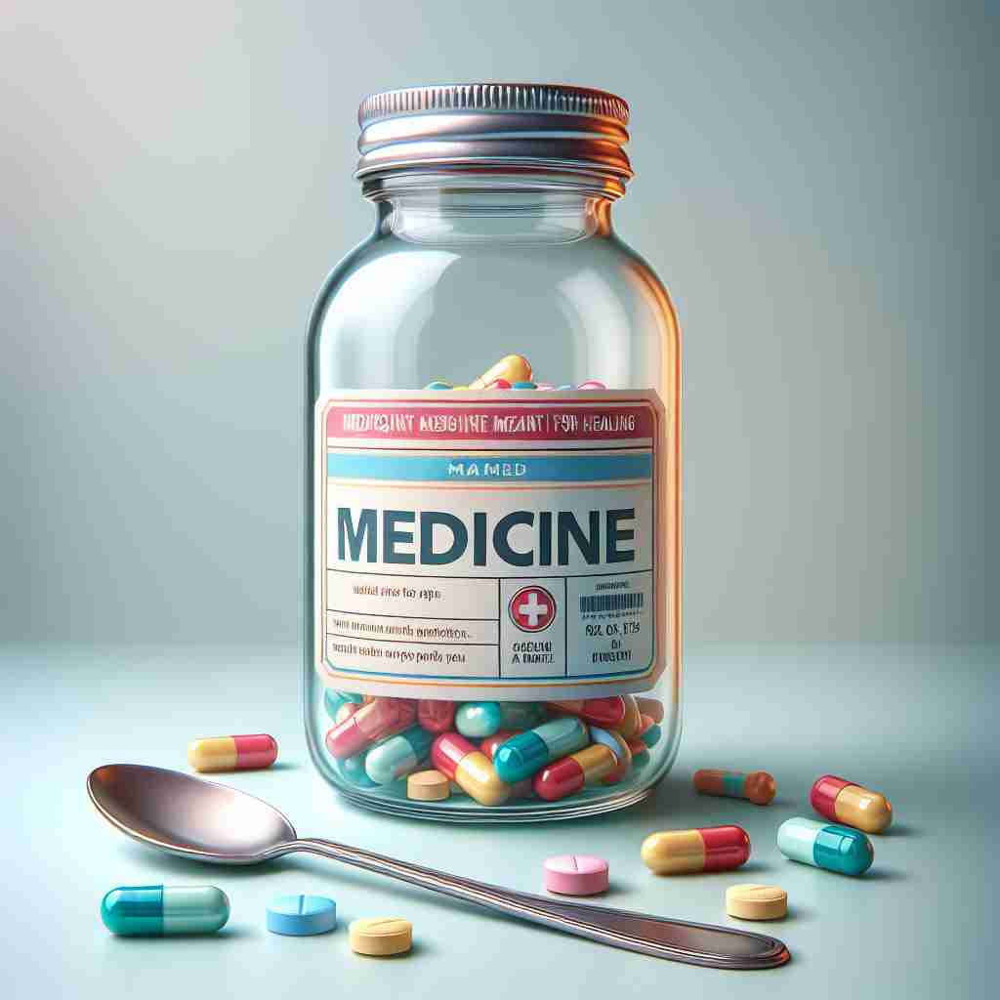

💬 You should take medicine to feel better. 你应该吃药来感觉好一些。

💬 You should take medicine when you feel sick. 当你感到不适时，应服药。
💬 You should take medicine to feel better. 你应该吃药来感觉好一些。
💬 You should take medicine when you feel sick. 当你感到不适时，应服药。
🧠 想象'medicine'是一种神奇的物质，不仅能治疗身体疾病，还能改善各种情况。从具体的药物，到抽象的医学科学，再到比喻意义上的'良药'，甚至是带有魔力的咒语，都源于其核心含义：一种用于治疗或预防疾病的物质。通过这个核心概念，你可以轻松联想并记住'medicine'的各种用法。
🔈 [ˈmedsn]
🗝️ n. a substance used to treat or prevent illness 用于治疗或预防疾病的物质
🎭 在一个温馨的家庭客厅里，小女孩坐在沙发上感冒了。她的母亲拿着一瓶药水，轻轻地将药倒入勺子里，对她说：‘喝下这个药水，你会感觉好一些。’这个场景展示了‘medicine’作为治疗或预防疾病的药物的含义。
💬 The doctor prescribed some medicine for my cough. 医生给我开了一些治疗咳嗽的药。
🌳 由词根 'medi-' (来自拉丁语，意为 '中间'、'调解') 和后缀 '-ine' 组成，表示与治疗和医学相关的物质。
💡 记住 'medicine' 可以通过联想 'medi' 的中间调解功能，即通过调解疾病状态，使身体恢复健康。将其与 '医药' 的概念联系起来，更加易于记忆。
🗝️ n. the science or practice of diagnosing, treating, and preventing disease 诊断、治疗和预防疾病的科学或实践
🎭 在一个现代化的医院里，医生们正在进行一场复杂的手术。墙上的显示器显示着病人的生命体征，医生聚精会神地工作，展示了‘medicine’作为诊断、治疗和预防疾病的科学或实践的含义。
💬 She's studying medicine at university. 她正在大学学习医学。
🤔 从治疗疾病的物质扩展到整个医学领域
🗝️ n. something that helps or improves a situation 有助于改善情况的东西
🎭 在一个动荡的社区会议上，领导者提议一个新的社区项目，旨在增加就业机会。她说：‘这个项目将成为我们社区的medicine，改善现状并带来繁荣。’这个场景展示了‘medicine’作为帮助或改善某种情况的事物的含义。
💬 Laughter is good medicine for stress. 笑声是减压的良药。
🤔 比喻用法，类似药物改善健康状况
🗝️ n. magical power or a magical spell 魔力或魔法咒语
🎭 在一个神秘的森林中，部落的巫医正在准备一场仪式。他手握药剂瓶，口中念着古老的咒语，四周雾气缭绕。这场景展示了‘medicine’作为魔法力量或魔法咒语的含义。
💬 The shaman used his medicine to ward off evil spirits. 巫师用他的药物驱赶恶灵。
🤔 源于古代将药物与巫术联系在一起